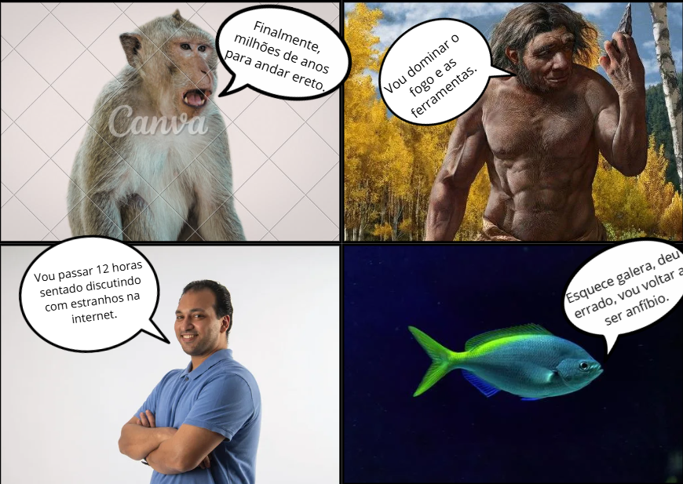
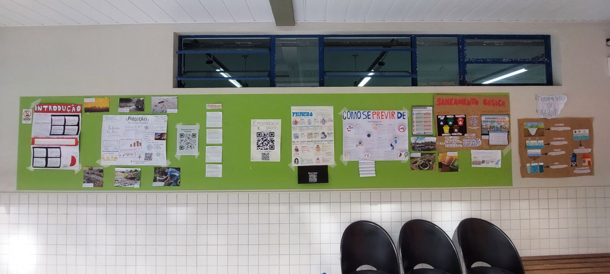
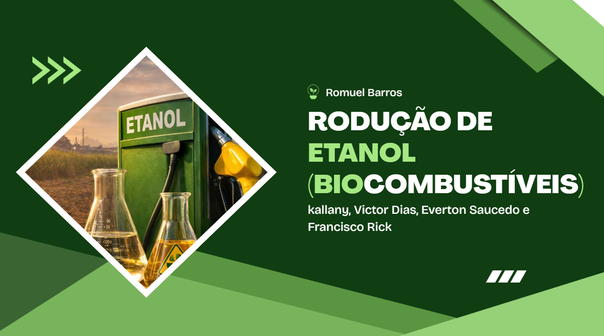
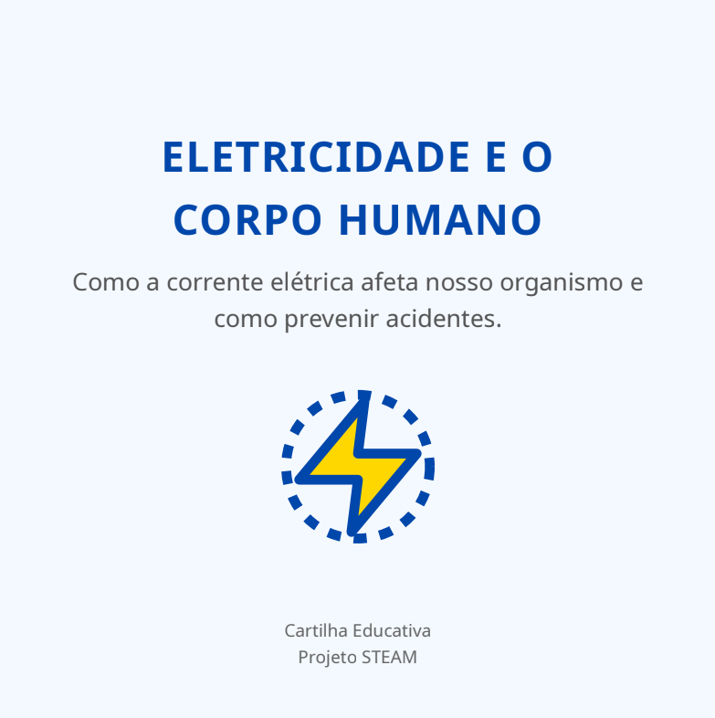

NATUREZA
ATIVIDADES

[Imagem: Meme Evolucionista Enviado]
Meme Evolucionista
C3, H15 e H18
Refletir sobre a evolução dos seres vivos e os impactos das ações humanas no meio ambiente.
O meme ilustra o conceito de evolução desde primatas até humanos, relacionando com o comportamento atual e impactos ambientais.
"A atividade foi divertida e instigante, pois permitiu relacionar conceitos científicos e consciência ambiental de forma visual e criativa."

Relatório da atividade prática disputa de eletricidade
C1, H1, C2, H7, H9, H11, H12
Compreender o fenômeno da eletricidade por atrito e aplicar os conceitos das Ciências da Natureza.
Estudo prático com balão, lã e plástico para gerar eletricidade estática e analisar atração e repulsão de objetos.
"A atividade foi bastante interessante, pois permitiu aplicar os conceitos estudados em sala de forma prática e desenvolver habilidades de observação."

Apresentação: Por que ainda usamos combustíveis fósseis?
C1, H1, C2, H9, H11
Refletir sobre o uso de combustíveis fósseis, seus impactos ambientais e alternativas sustentáveis.
Discussão sobre efeitos da queima de combustíveis, poluição do ar e mudanças climáticas através da análise de dados.
"A atividade foi bastante enriquecedora, ajudando a entender a importância de buscar soluções sustentáveis e avaliar alternativas energéticas."

[Foto: Mural Interativo produzido pela turma]
Mural Interativo sobre Meio Ambiente e Saúde
C2, H11, C3, H15, H18, C4 e H23
Compreender questões relacionadas às Ciências da Natureza por meio da investigação, observação e análise de situações ambientais, identificando impactos das ações humanas e refletindo sobre propostas de preservação e promoção da saúde.
A atividade consistiu na elaboração de um mural interativo em conjunto com a turma, com a produção de uma parte individual e a organização coletiva das informações. A proposta envolveu a pesquisa e apresentação de conteúdos relacionados ao meio ambiente, aos impactos das ações humanas e à importância da preservação ambiental e da saúde coletiva.
"A atividade foi interessante e colaborativa, pois permitiu compartilhar conhecimentos com a turma e compreender melhor a relação entre as ações humanas, o meio ambiente e a qualidade de vida."

Abrir Apresentação no Canva ↗Produção de Etanol (Biocombustíveis)
C2, H6, H7 e H9
Compreender os princípios da Estequiometria e sua aplicação nos processos industriais, relacionando os conceitos químicos de matéria, energia e transformação com procedimentos tecnológicos presentes no cotidiano.
A atividade consistiu na elaboração e apresentação de um seminário sobre a aplicação da Estequiometria na indústria, com foco na produção de etanol e biocombustíveis. Durante o trabalho, foram pesquisados conceitos relacionados às reações químicas, proporções entre reagentes e produtos e sua importância para o controle e a eficiência dos processos industriais.
"A atividade foi interessante, pois permitiu compreender como os conceitos de Química estudados em sala são utilizados na indústria, mostrando a importância da Estequiometria para o desenvolvimento e controle de diferentes processos."

Abrir Cartilha no Drive ↗Eletricidade e o Corpo Humano
C1, H3, H4, C2, H12, C4 e H23
Compreender a relação entre a eletricidade e o funcionamento do corpo humano, utilizando conhecimentos científicos para identificar os efeitos da eletricidade no organismo e refletir sobre cuidados e medidas de prevenção relacionados à saúde e à segurança.
A atividade consistiu na elaboração de uma cartilha educativa sobre a relação entre a eletricidade e o corpo humano. O trabalho envolveu a pesquisa e organização de informações científicas, utilizando textos, imagens e outros recursos para explicar de forma clara os efeitos da eletricidade no organismo e os cuidados necessários para prevenir acidentes.
"A atividade foi interessante e informativa, pois permitiu compreender melhor como a eletricidade pode interagir com o corpo humano e mostrou a importância do conhecimento científico para a prevenção de acidentes e a promoção da saúde."
Portfólio Digital de Eletroquímica
C2, H7, H9 e H11
Compreender os princípios da Eletroquímica e relacioná-los às transformações de energia e matéria, utilizando a investigação científica e a experimentação para observar, levantar hipóteses, coletar dados e interpretar resultados.
A atividade consistiu na elaboração de um portfólio digital sobre Eletroquímica, acompanhado do registro em vídeo de uma atividade experimental. O trabalho envolveu a aplicação de conceitos de Química, a realização do experimento, a observação dos fenômenos, o levantamento de hipóteses, a coleta de dados e a análise dos resultados obtidos.
"A atividade foi interessante e prática, pois permitiu observar os conceitos de Eletroquímica diretamente em um experimento, tornando mais fácil compreender as transformações de energia e matéria estudadas em sala."
As atividades do 3º trimestre serão adicionadas aqui em breve.